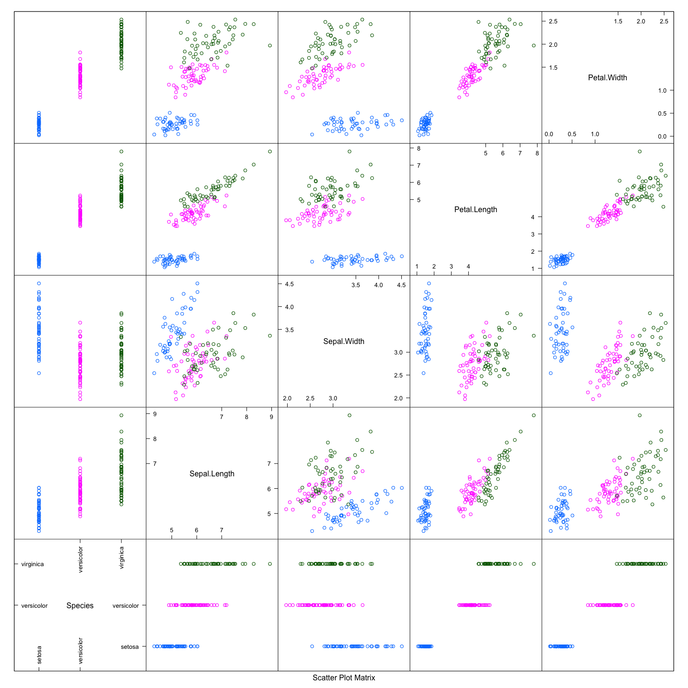

QDAboot
Тураев Тимур
16 января 2015 г.
## Loading required package: RColorBrewer## Warning: package 'mvtnorm' was built under R version 3.1.2## Warning: package 'plyr' was built under R version 3.1.2##
## Attaching package: 'boot'
##
## The following object is masked from 'package:lattice':
##
## melanomaМодель (матрицы ковариации отдельно по сортам):
make.model <- function(data, groups) {
data <- as.matrix(data)
means <- aggregate(data, list(groups = groups), mean)
covs = by(data, groups, cov)
list(cov = covs, means = means[, -1, drop = FALSE])
}
model <- make.model(subset(iris, select = -Species), iris$Species)Вспомогательная функция, строящая данные. За основу взята функция из примера:
make.data <- function(data, groups, model, size = nrow(data), groups.name = "Species") {
ind <- sample(seq_along(levels(groups)), size = size, replace = TRUE)
ind <- sort(ind)
res <- data.frame(name = factor(levels(groups)[ind], levels = levels(groups)))
names(res) <- groups.name
mx <- Map(function(i) rmvnorm(count(res)[2][i, ], mean = as.numeric(model$means[i,]), sigma = model$cov[[i]]), seq_along(levels(groups)))
mx <- Reduce(rbind, mx)
res <- cbind(res, mx)
colnames(res) <- c(groups.name, colnames(model$cov[[1]]))
rownames(res) <- NULL
res
}Строим данные с помощью нашей функции make.data:
res <- make.data(iris, iris$Species, model)
splom(res, groups = res$Species)

Далее просто делаем параметрический бутстрапинг, аналогично примеру.
my.qda <- function(x, data, ...) {
out <- qda(x, data, ...)
out$data <- data
out
}
my.statistic <- function(data) {
tn <- tune(my.qda, Species ~ ., data = data, predict.func=function(...) predict(...)$class, tunecontrol=tune.control(sampling="fix", fix=1/2))
tn$best.performance
}
b <- boot(iris, my.statistic, R = 999, sim = "parametric",
ran.gen = function(data, mle, ..., size = 300) make.data(data, mle$groups, mle$lda.model, ...),
mle = list(groups = iris$Species, lda.model = model))
b##
## PARAMETRIC BOOTSTRAP
##
##
## Call:
## boot(data = iris, statistic = my.statistic, R = 999, sim = "parametric",
## ran.gen = function(data, mle, ..., size = 300) make.data(data,
## mle$groups, mle$lda.model, ...), mle = list(groups = iris$Species,
## lda.model = model))
##
##
## Bootstrap Statistics :
## original bias std. error
## t1* 0 0.02529196 0.01938893plot(b)
boot.ci(b, type = "perc")## BOOTSTRAP CONFIDENCE INTERVAL CALCULATIONS
## Based on 999 bootstrap replicates
##
## CALL :
## boot.ci(boot.out = b, type = "perc")
##
## Intervals :
## Level Percentile
## 95% ( 0.0000, 0.0667 )
## Calculations and Intervals on Original Scale